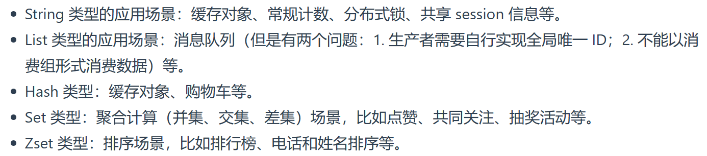
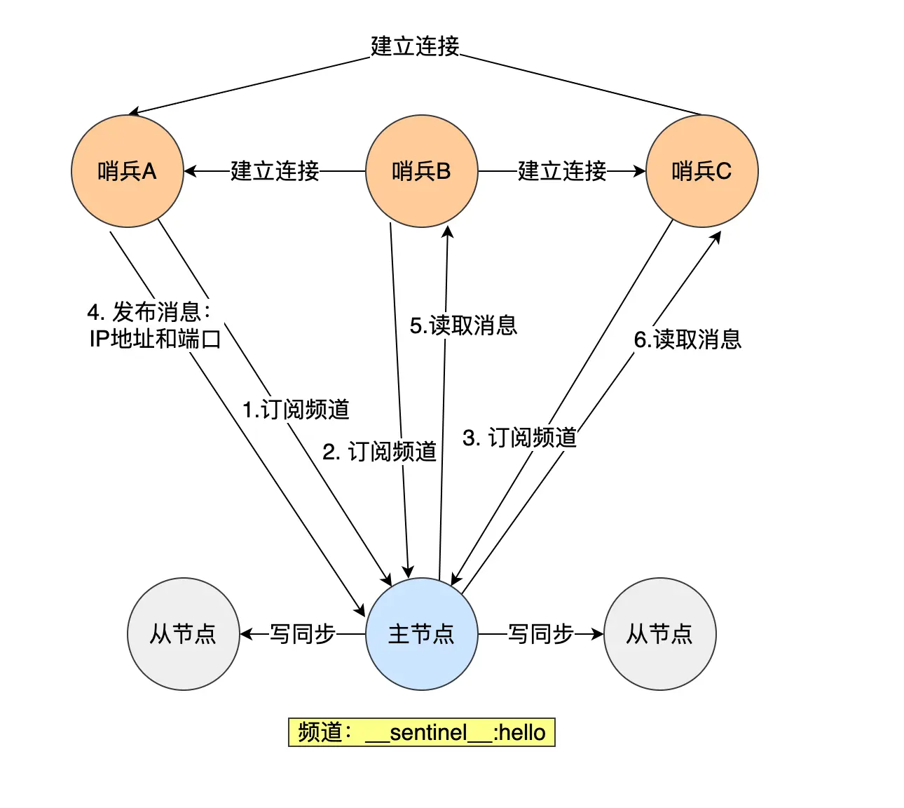

# 简介
# 数据结构
# 数据库实现
# 数据类型
<img src="13eda52ea8480718461a53c17978a17b.png" alt="截图" style="zoom:100%;" />

<img src="fdd0602a7d6f49a807a60f2c44b07e94.png" alt="1679487357432.png" style="zoom:100%;" />
# 实现方式
# 线程模型
# 持久化
# 写时复制技术
子进程和父进程共享同一片内存数据，只有在发生修改内存数据的情况下，物理内存才会被复制一份
# AOF 日志
# 写入 AOF 日志过程
# AOF 重写机制
AOF 重写机制是在重写时，读取当前数据库中的所有键值对，然后将每一个键值对用一条命令记录到「新的 AOF 文件」，等到全部记录完后，就将新的 AOF 文件替换掉现有的 AOF 文件
# 重写时执行命令
# RDB 快照
RDB 快照就是记录某一个瞬间的内存数据，记录的是实际二进制数据，
# 混合持久化
# 大 key 对持久化的影响
# 集群
# 主从复制
# 第一次同步
# 增量复制
# 哨兵模式
哨兵节点通过 Redis 的发布者 / 订阅者机制，哨兵之间相互感知，相互连接，然后组成哨兵集群

哨兵通过 INFO 命令，在主节点获得所有从节点连接信息，于是和从节点建立连接，进行监控
# 切片集群
# 脑裂问题
由于网络问题，集群节点之间失去联系。主从数据不同步；重新平衡选举，产生两个主服务。等网络恢复，旧主节点降级为从节点，与新主节点进行同步复制时，从节点会清空自己的缓冲区，导致之前客户端写入的数据丢失
# 过期删除
# 惰性删除策略
<img src="7399848c8a224bf07e0c546aba1c1229.png" alt="截图" style="zoom:50%;" />
# 定期删除策略
<img src="edc8d9f19ec20d29522cd084af37113c.png" alt="截图" style="zoom:50%;" />
# 内存淘汰
# 缓存设计
# 缓存异常
# 缓存更新策略
# Cache Aside（旁路缓存）策略
# Read/Write Through（读穿 / 写穿）策略
# Write Back（写回）策略
Write Back（写回）策略在更新数据的时候，只更新缓存，同时将缓存数据设置为脏的，然后立马返回，并不会更新数据库。对于数据库的更新，会通过批量异步更新的方式进行。
# 实战
# 延迟队列
# 大 key
# 管道
# 分布式锁